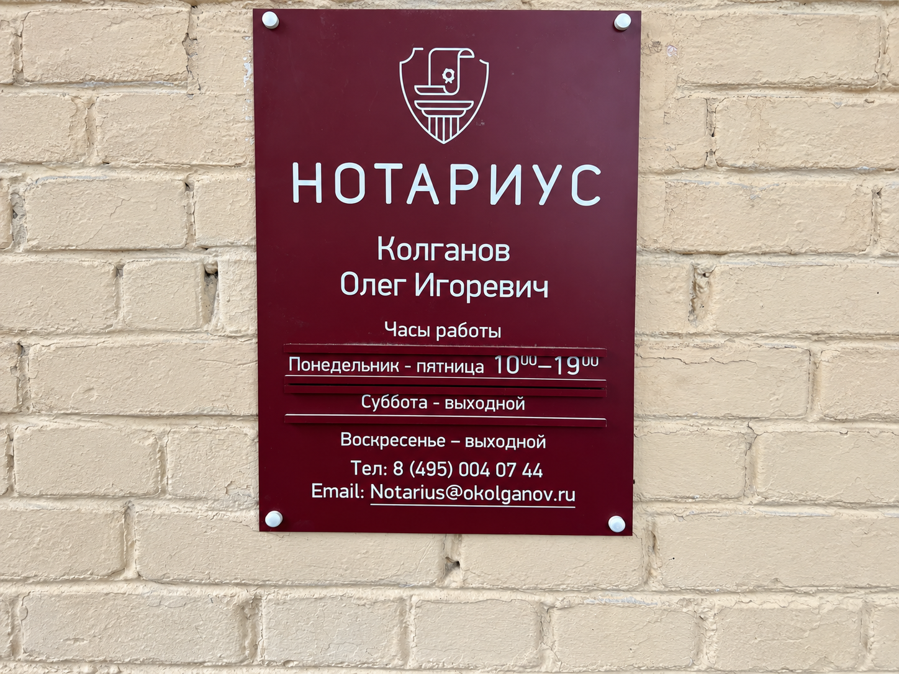
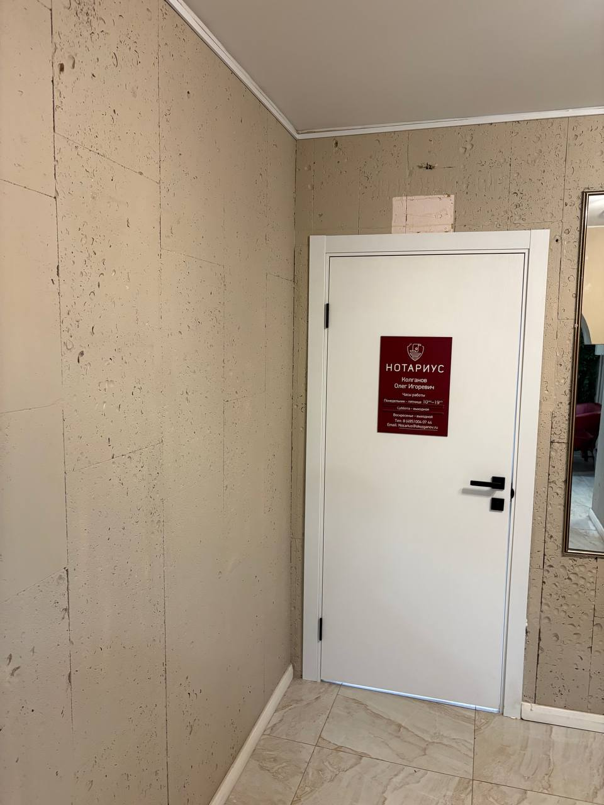
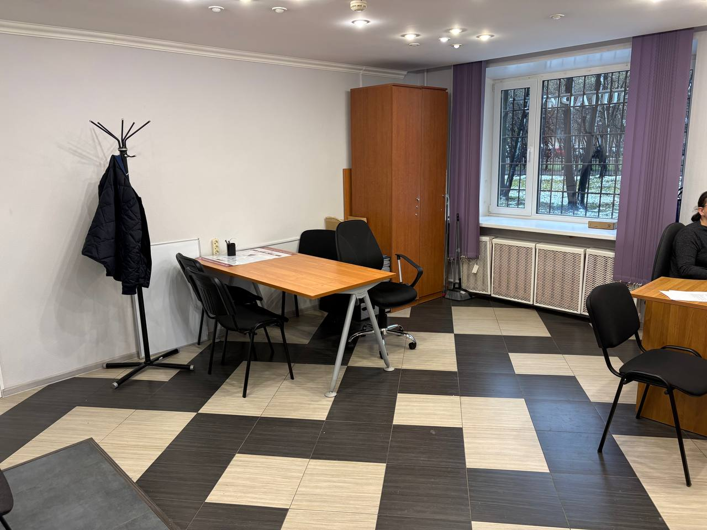
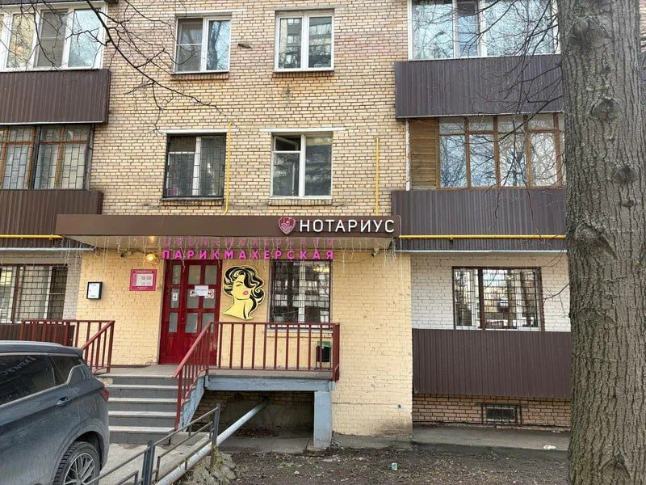

Член комиссии МГНП по взаимодействию со СМИ и имиджу
Член комиссии МГНП по информационным технологиям
Веду нотариальную деятельность в собственной конторе на севере Москвы — в шаговой доступности от метро «Речной вокзал». Принимаю физических и юридических лиц по полному спектру нотариальных вопросов.
В работе придерживаюсь главного принципа: каждое обращение заслуживает внимательного отношения. Разъясняю правовые последствия простым языком, помогаю подобрать оптимальное решение и довести вопрос до результата — без лишних визитов и формальностей.
Совершаю полный спектр нотариальных действий: сделки с недвижимостью, наследственные дела, завещания и доверенности, брачно-семейные и корпоративные вопросы, депозит нотариуса, удостоверение и свидетельствование документов.
Московская городская нотариальная палата сообщила о принятии Олегом Колгановым присяги 19 марта 2026 года.




Опишите вопрос и важные обстоятельства.